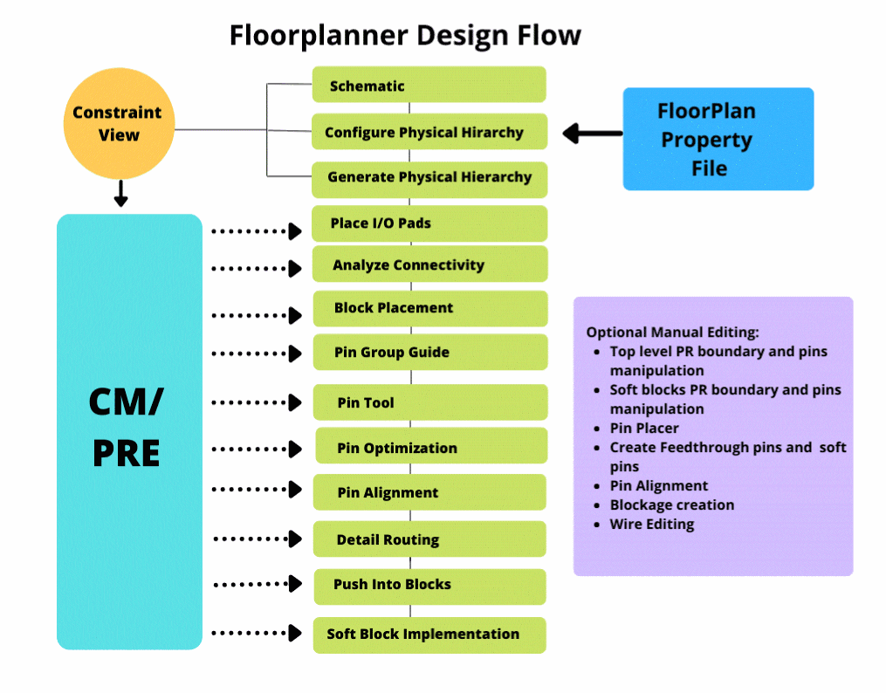

Floorplanner Design Flow
The following flow diagram shows the design flow in Floorplanner.

The floorplanning design flow consists of the following steps. Each of these steps is described later in this guide in detail.
-
Configure the physical hierarchy
In this step, you specify how a layout implementation is generated from a schematic design. You use the Soft Block mode of the Configure Physical Hierarchy utility to define the soft blocks that will be created by the Generate Physical Hierarchy utility.
See Configuring the Physical Hierarchy. -
Generate the physical hierarchy
In this step, you generate a physical hierarchy from a logical hierarchy in a schematic. The Generate Physical Hierarchy command creates soft layouts and soft abstracts in the layout canvas corresponding to the configuration view generated by the Configure Physical Hierarchy utility in the previous step.
See Physical Hierarchy Generation Methods. -
Reinitialize the design
In this step, you reinitialize the design to place the cell instances according to their celltypes. When you reinitialize a design, the I/O pads are placed inside the top edge of the design boundary, the standard cells are placed outside the right edge of the design boundary, and the blocks are placed outside the left edge of the design boundary. This improves the legibility of the design.
See Reinitializing a Floorplan. -
Place I/O Pads
In this step, you place the I/O pads around the design boundary. The IO Placer utility enables you to place the I/O pads based on connectivity or side and alignment constraints.
See I/O Planning and Placement. -
Analyze connectivity
In this step, you analyze connectivity, that is, the number of connection a block has with other blocks, so that during manual floorplanning, you can keep the blocks with more connectivity between them closer to each other.
See Block Placement -
Place blocks
In this step, you place the blocks in the design either manually or automatically. After placing the blocks you can descend into individual blocks and place and route them. You can then return to the top level to place and route the blocks at the top level.
See Block Placement and Soft Blocks. -
Pin Group Guide
In this step, you can create pin groups and assign pin constraints to these groups. After creating pin groups, you can assign them to full or partial edge(s), and apply process constraints, such as layer range and spacings, to the entire pin group through a dedicated pin group guide constraint.
See Creating a Pin Group Guide. -
Pin Tool
In this step, you can use the Pin Tool as a unified interface for all pin-related tasks, such as creating pins, resizing pins, promoting pins, making pins electrically aware, merging pins, repositioning pins, planning and optimizing pins, editing pin attributes, and setting their location constraints.
See Pin Tool. -
Optimize pins
In this step, you optimize the pins. Blocks placed together do not guarantee that the net length between the blocks or pins is optimal or the shortest. This is true even for blocks placed by the block placer. Therefore, Pin Optimizer is required to position pins of these blocks to get the shortest possible net lengths at a particular level. However, before you optimize pins, you must set the edge constraint on the top-level pins or the level1 pins by using Pin Planner.
See Pin Planner and Pin Placement. -
Align pins
In this step, you align the pins.
See Aligning Pins.
Return to top